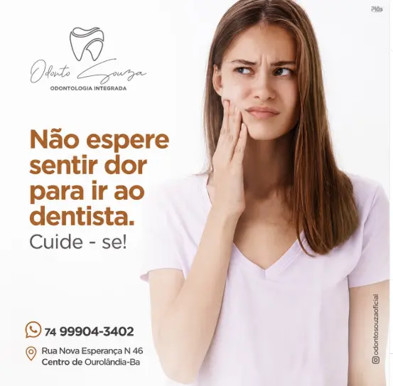
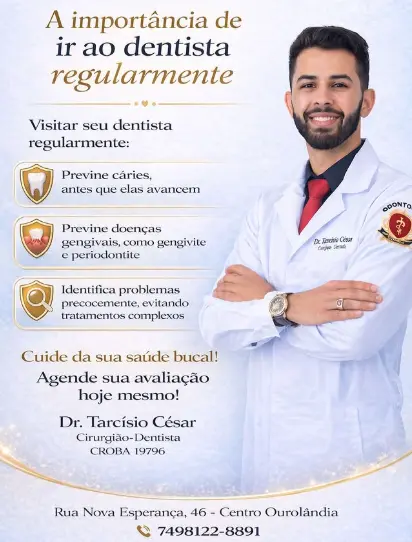
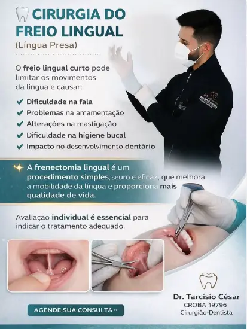
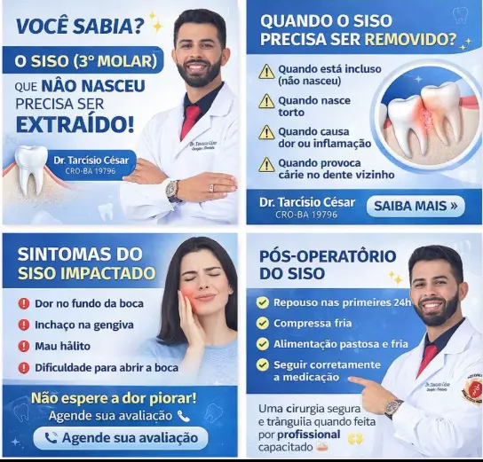
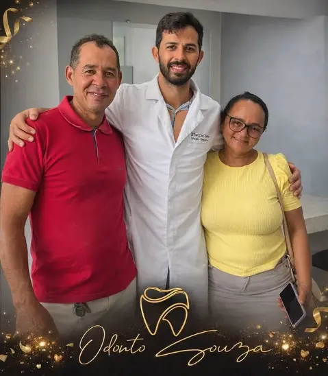

Avaliação e prevenção
Acompanhamento regular para identificar alterações precocemente e preservar a saúde do seu sorriso.
Agendar avaliação →Odontologia integrada em Ourolândia
Atendimento odontológico individual e responsável para cuidar da sua saúde bucal em cada fase.

Sobre o atendimento
Uma boa experiência no dentista vai além do procedimento. Ela começa com uma avaliação cuidadosa, explicações claras e um plano adequado às necessidades de cada paciente.
O Dr. Tarcísio Souza atua em Ourolândia com foco em cuidado próximo, prevenção e tratamentos responsáveis.
Quero cuidar do meu sorrisoTratamentos
Da prevenção aos procedimentos cirúrgicos, cada atendimento é conduzido com avaliação individual.
Acompanhamento regular para identificar alterações precocemente e preservar a saúde do seu sorriso.
Agendar avaliação →Avaliação e abordagem cirúrgica para sisos inclusos, impactados ou associados a dor e inflamação.
Avaliar meu caso →Tratamento do freio lingual curto após avaliação individual, favorecendo mobilidade e função.
Solicitar avaliação →Planejamento de cuidados odontológicos conforme as necessidades identificadas durante a consulta.
Conversar sobre meu sorriso →Não espere sentir dor. A prevenção é a melhor forma de cuidar do seu sorriso.
Agendar minha consultaUma experiência mais tranquila
Entender cada etapa do tratamento ajuda você a tomar decisões com segurança e chegar ao atendimento com mais tranquilidade.
Informação e prevenção




Quer saber qual cuidado faz sentido para você?
Fazer uma avaliaçãoLocalização
Use seu aplicativo de navegação preferido para traçar a melhor rota até o consultório.
Agende sua avaliação
Preencha as informações. Ao enviar, você será direcionado ao WhatsApp com sua solicitação organizada.